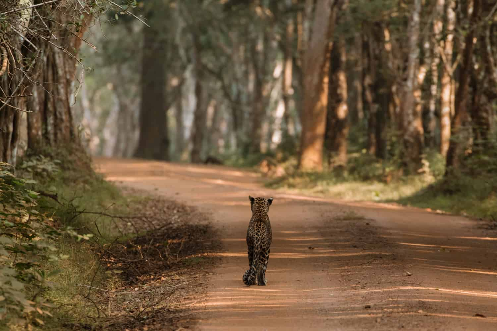
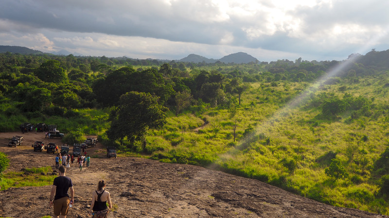

srilanka leopard

Of all the great carnivores, the leopard (Panthera pardus, Linnaeus, 1758) is the shrewdest and most elusive. It can take down prey significantly bigger than itself and is the strongest climber among the larger cats, pound for pound. The genus Panthera, which also includes the lion, tiger, and jaguar, is larger than the leopard. The leopard was formerly found in many parts of eastern and southern Asia and Africa, ranging from Siberia to South Africa. Populations of the leopard were also found in parts of the Indian subcontinent, Sri Lanka, Indochina, Malaysia, Indonesia, and China. Sadly, overhunting and habitat destruction have resulted in a drastic reduction in range.
places to spot leopard
Yala National Park

Wilpattu National Park
Udawalawe National Park
threats faced by leopard
- Habitat Loss
- Human-Wildlife Conflict
- Poaching
Rapid urbanization, agricultural expansion, and deforestation have led to the fragmentation and degradation of leopard habitats. This not only reduces the available space for leopards but also isolates populations, making it difficult for them to breed and maintain genetic diversity.
As human populations expand into leopard territories, conflicts arise. Leopards may prey on livestock, leading to retaliatory killings by farmers to protect their livelihoods. This escalates the threat to leopard populations and creates a negative perception of these big cats among local communities.
Illegal hunting poses a direct threat to leopards, driven by demand for their skins, bones, and other body parts. This activity can have severe consequences for leopard populations, particularly if not effectively addressed.
what mechanisms are taken to reduce the threat
- Protected Areas and Corridors
- Community-Based Conservation
- Law Enforcement and Anti-Poaching Measures
Establishing and maintaining protected areas and wildlife corridors are crucial for preserving leopard habitats. These areas provide safe spaces for leopards to thrive and connect with neighboring populations.
Engaging local communities in conservation efforts is essential. This includes implementing measures to reduce human-leopard conflicts, such as secure livestock practices, and raising awareness about the importance of leopard conservation.
Strengthening law enforcement to combat poaching and the illegal wildlife trade is crucial. This involves stricter penalties for offenders, improved surveillance, and collaboration with local and international authorities.
Slwcs
Since 1997, we have been working to empower the local communities and provide them with the tools they need to protect our endangered wildlife Our mission is to enable communities to balance ecosystem protection and economic development by pioneering a model for sustainable conservation. We are a non-governmental organisation committed to developing a sustainable model for wildlife conservation in Sri Lanka. Our focus is on helping people, elephants and other wildlife co-exist peacefully. Our unique model involves a fully inclusive conservation strategy. We simultaneously pursue three key strategies to successfully fulfil our mission and achieve our goals and objectives, including field research, applied conservation, and sustainable economic development We are highly committed to developing practical solutions that mitigate wildlife-human conflict, environmental damage, climate change, and biodiversity loss, and that address sustainable livelihoods, land use, and rural poverty issues. All of these issues are intertwined and must be addressed simultaneously to achieve lasting and meaningful conservation.